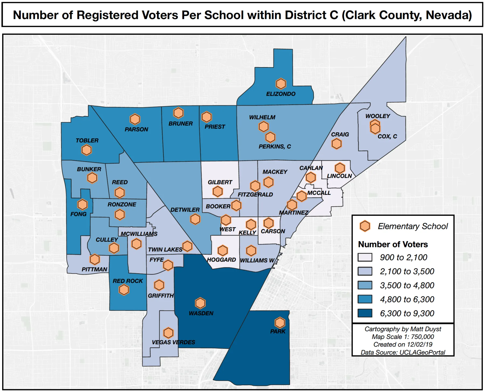

UCLA coursework, 2014 to 2018
Elementary School Attendance & Number of Registered Voters Per School District: Minimizing Classroom Sizes Clark County, NV
Abstract:
The premise of this analysis is to illustrate the relationship between elementary school attendance and number of registered voters in Clark County, NV (District C). This school district holds the highest number of students in the county, making complaints of cramped classrooms and lack of available transportation provided by the school a common occurrence.
The idea behind this spatial overlay and geoprocessing process is to create maps that indicate a need for school attendance areas (elementary schools within county-level boundaries) to minimize their class sizes. It also reinforces student safety protocols - the underlying base map accentuates available bus routes, or lack thereof for many students who live more than one-mile from the nearest school.
The Correlation between Elementary School Attendance & Registered Voters: Clark County, NV

This map represents the number of elementary schools in 'District C' of Clark County, Nv - the most populated school district in the county. It also illustrates the borders of Attendance Areas, and the locations of registered voters (homes).

The choropleth map above showcases Attendance Areas with a breakdown by number of voters in District C. The values for registered voters per school were obtained through a field calculation of attendance zones. The names of the schools associated with the attendance areas are also included.